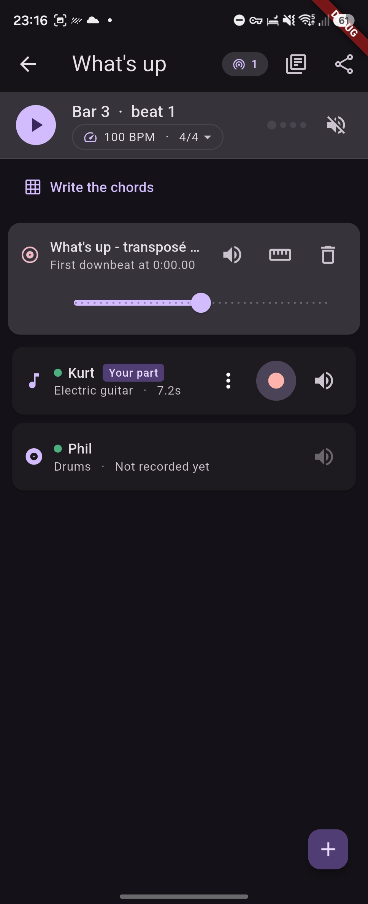

GrooveForge is a free music app. You build a rack of modules (keyboards, a guitar, effects, a drummer,
loopers) and connect them with cables, like real gear. Play on the screen, or plug in a MIDI keyboard.
When the band meets, each player records their part of the same tune on their own phone. The phones share
the tune over Wi-Fi. You need no account and no internet.
Every module has sockets on its back. Tap the cable icon at the top of the screen
(Patch view), then long-press a socket and drag it to another one.
Yellow cables carry notes, red and white cables carry sound. In the clip, a yellow cable runs from the
keyboard to Riff, a guitar with no keys of its own, so the keyboard now plays the guitar.
An instrument plays through the speakers without any cable. You only connect it to send its notes
or its sound to another module.
Everyone records their own part over a shared click. GrooveForge measures how late your phone plays
and records, once for the speaker and once for each headset, and moves your take back onto the beat.
Import a recording to play along to, slow it down to half speed without changing its pitch, write
the chords and add the scores.
Hold a key and tap a scale in Xen: the key you hold becomes the root, and every key you press lands in
the scale. There are 92 scales, from blues to maqam, raga and gamelan. Scales with notes between the
piano keys retune those keys. You can also build your own, or import Scala (.scl) files.
Jam Mode keeps one keyboard in the scale of another. It reads the chord the leading keyboard plays,
or only its lowest note for a bass line. A note outside the scale moves to the nearest one that fits.
Riff is an electric guitar modelled string by string. The on-screen keyboard or your MIDI controller
sends it the notes. Cable it into the Amp for a crunchy or distorted sound.
Cable Live Input (your microphone) into Autotune and sing. Each note is pulled onto your key and scale.
With Retune at 0 ms you get the stepped robot voice. A needle shows how many cents
off you were.
The Drum Generator plays a groove at the tempo shown at the top, from bossa nova to metal.
The loopers start and stop recording on a bar line, so your loop stays
in time with the drums.
Get GrooveForge
GrooveForge is free and open source (MIT licence). On Android, get it from
Google Play or
F-Droid. For Windows, macOS and Linux
(.deb, .rpm, Arch and Flatpak packages), download it from the
releases page on GitHub.
The web demo runs in your browser with nothing to install, but with fewer modules:
Riff, the Amp, Autotune, the Vocoder, the Audio Looper, Live Input and the audio effects need the app.
The demo also forgets your session when you close it. Use Save As… to keep your project.
VST3 plugins load in the Windows, macOS and Linux apps only.
The rack of a new project: a keyboard and a Xen module, with the tempo and play controls at the top.

A tune in the Rehearse tab: the chords, the imported recording, and one lane per player.